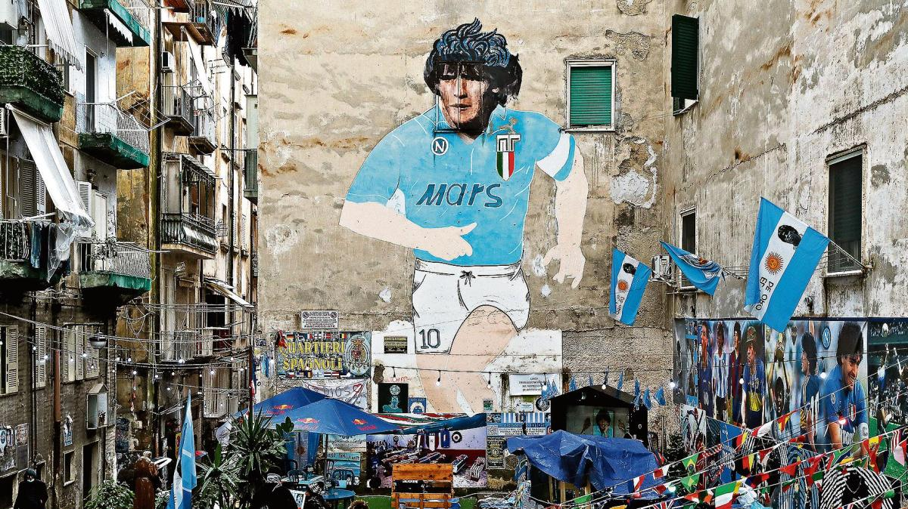
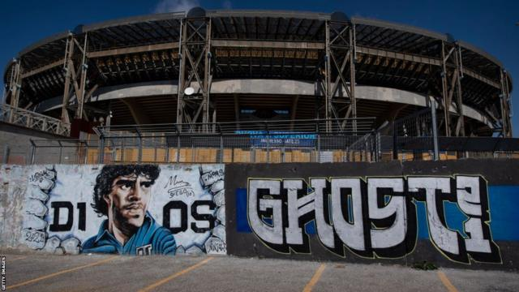

Njegov dolazak doneo je ne samo sportski uspeh, već i osećaj ponosa i identiteta koji su nadahnuli celu zajednici Maradona je brzo postao idol navijača Napolija, koji su ga smatrali svojim herojem i simbolom nade. Pod njegovim vodjstvom, Napoli je osvojio svoje prve i jedine titule u Italijanskoj Seriji A, postavši prvak Italije u sezonama:
Van terena, Maradona je bio ikona i van fudbala. Njegova popularnost i uticaj proširili su se na sve slojeve društva u Napulju. On je simbolizovao snagu, borbu i nepokolebljiv duh napolitanskog naroda. Maradonina povezanost sa Napuljem nije bila samo sportska, već i emotivna i kulturološka. On je bio više od samo fudbalera, bio je deo naroda, deo indetiteta grada, oličenje nade i ponosa za Napolitance. Stadion u Napoliju, od njegove smrti, nosi njegovo ime. Zato ga danas slave ulice tog grada.
Diego Armando Maradona bio je poznat i po društvenom aktivizmu ovom gradu. Maradona je bio poznat po svojoj podršci marginalizovanim zajednicama i borbi protiv socijalne nepravde. Njegov angažman u humanitarnim aktivnostima i borbi za prava radnika dodatno je ojačao njegovu popularnost. Iako Napulj do njegovog dolaska, pa i odlaska, nije bio turistički grad. Njegova popularnost i uticaj je doprineo promociji turizma i ekonomskom razvoju grada. Njegova slika, statue i spomenici prisutni su širom grada, a njegova imena nose ulice, trgovi i parkovi.
